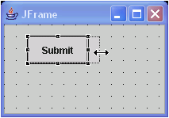

In most cases, if a component's container does not control the
size of the component, you can use the selection handles to resize visual
components, or you can change the size in the Properties view.
For example, in a Border layout, the components typically fill the
entire space that is created by the layout manager, and a selected component
does not show any resize handles. With layout set to null, on the other hand,
a selected component shows resize handles that you can use to resize freely.
If no resize handles are available, you can try using the appropriate size
property in the Properties view.
To resize a component using the resize
handles:
- In the Design view, select the component that you want to resize.
- Click and drag one of the resize handles. As you drag the handle,
a dotted line shows where the component will be sized to when you release
the mouse.

- Release the mouse button.